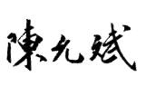

古代的中国先贤根据太阳的运行位置，将一年分为二十四段，每月两段，月首叫“节”，月中叫“气”，合起来就是“节气”。对节气更替引起的自然万物变化规律的认识，形成了中国人独有的时间知识体系。
每一个节气的到来，都带来气候、物候的变化，也对人的身体产生影响。中国人经过几千年的实践发现，顺应节气来调整日常生活和饮食，能起到事半功倍的养生效果。因此，“二十四节气”在传统中医学和养生学中有很广泛的应用。每个节气都是一个养生和防病、治病的节点。
在我推广节气养生的这些年中，通过对大量读者们的实践经验进行分析，我发现，节气养生对于从北到南不同地域的人，都有一定的效果。甚至海外的一些读者们，也通过节气养生调养好了身体。
中国人祖祖辈辈讲究顺应节气，可能是这样的传统形成了我们共同的基因记忆。只要您是炎黄子孙，无论生活在哪里，不妨尝试跟随节气吃吃中国传统饮食，感受我们的先辈“天人合一”的生活，或许会有意想不到的收获。
这套书的主要内容是以二十四节气为中心的顺时养生，包括节气防病和保健重点，以及对应的饮食方法和日常起居宜忌等。
由于在《吃法决定活法》书中已分享过我的家传节气食方，本书对读者们实践后咨询较多的内容进行详细解说和补充，个别具体内容则不再重复。
1.在整个节气期间（大约半个月），我们都可以用到这个节气的饮食方子和养生原则。月初的节气，其养生方还可以适用于整个月。
2.尽量做到顺时不间断。节气养生是环环相扣的。每个节气的饮食，也同时为下一个节气做好铺垫、打好基础。如果前几个节气的食方没有按时吃，后面节气的食方就不容易达到最好的效果，甚至有时还需要用一些特殊的方法来补救，比如，冬至前的“开路汤”。
节气养生是“顺时生活”的主要内容，“顺时”很关键。
顺时的“时”，我将它分为三个层面：天时、地时、人时。其中，与节气相关的部分，主要有三点。
1.节气中的天时
在一年之中，随着二十四节气的轮转，带来风、寒、暑、湿、燥、火等天气的变化。在一日之中，则是昼夜的转换、十二时辰的变化。这些都是天时。
同一个节气，在不同的年份，气候的差异对人会有影响。《黄帝内经》对一个甲子60年的变化规律和相应的治病保健措施有很精辟的总结。特别是其中对于疫病的预测，经过长期的验证，准确率是很高的。关于这个部分的具体内容，可以参考《顺时生活》系列健康日历。
2.节气中的地时
二十四节气有物候的变化。大地上天然的食材在不同的节气应时而生，我们顺时来采收，也顺时来食用，来获得它们最佳的营养和功效。
在不同的节气我们吃同一种食物，效果都可能不一样。比如，立春、雨水时吃韭菜可以补身体的阳气。而清明节气后再吃韭菜，就有可能上火。
其实，中国古代早就发明了大棚种植的技术，可以种植反季节蔬菜。但当时的朝廷认为这样不对，就下令阻止了，认为这是不时之物，食之伤人。就是说，不是这个季节应该吃的食物，吃了以后会对人体造成伤害。
3.节气中的人时
就像古人说的：“花开花落自有时，总赖东风主。”其实，人的身体也顺应着自然的节律，随着节气的转换，有生、长、化、收、藏的变化。在不同的节气，养生和饮食的重点也应有所不同。
疾病的高发期，也跟节气很有关系。比如，大雪是上消化道出血和心肌梗死最高发的节气，冬至是心力衰竭高发的节气，大寒是脑梗死高发的节气，等等。知晓了规律，我们在每个节气的养生防病就有了重点。
二十四节气顺时养生，就是顺应天、地、人这三个层面的“时”，在节气的流转中顺其自然地过好每一天，让每一天的每一口家常便饭，都变成顺应天时的滋补品。
愿我们都能坚持顺时生活，不负光阴！

2020年11月立冬于北京